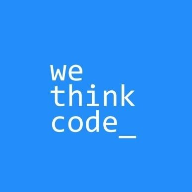
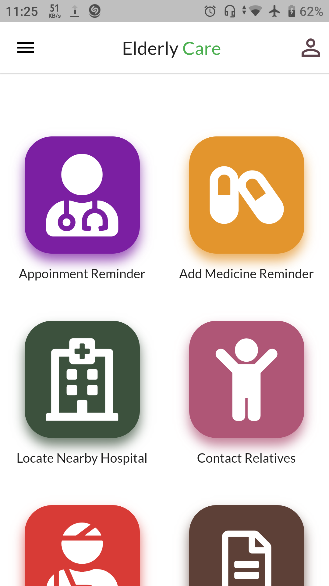
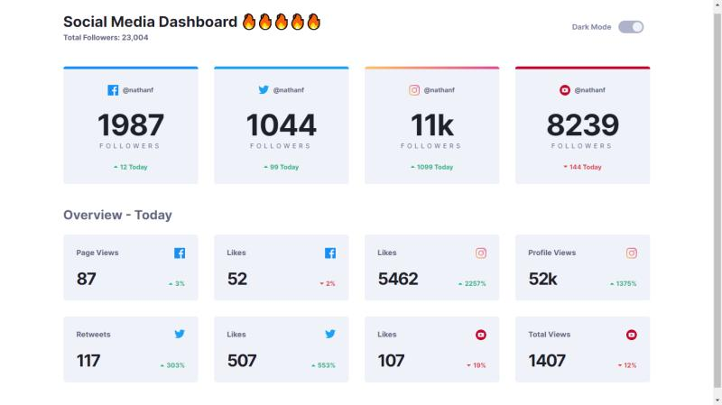

Web Development Fundamentals
IBM SkillsBuild · Remote
Foundational training in modern web development concepts, finished with a task manager web app as the final project.
Cape Town, South Africa
IT Support Technician & Software Developer
I keep schools and businesses running on Microsoft 365, Google Workspace and their admin systems, and I build software and Power BI reports that make that work easier.
A motivated, adaptable technology professional with a background in software and web development and day-to-day experience in technical support.
I'm skilled in Python, Java, JavaScript, HTML, CSS and SQL, with a solid understanding of backend development and the Software Development Life Cycle. In support roles I work with Microsoft 365, Active Directory, Microsoft Azure and remote support tools in fast-paced environments, using careful troubleshooting to find root causes and fix them properly.
Baseline IT · placed at Constantia Waldorf School
Baseline IT
2U, Inc.
Home Assist Technologies
WeThinkCode_
Our group projects used a rotating team lead after each iteration. During my turn I reorganised the team's production structure and the project's file structure, which led to a 20% increase in output and a 32% drop in data handling errors.
IBM SkillsBuild · Remote
Foundational training in modern web development concepts, finished with a task manager web app as the final project.
WeThinkCode_ · Cape Town
Awarded after completing the WeThinkCode_ Software Engineering Programme and meeting SETA criteria through continuous development and project showcases, with group projects presented on video for assessment.
Grassy Park High School · Cape Town

Python · Java · Dart · JavaScript · SQLite
Peer-to-peer coursework, including a team-built text-based Java game where players join each other's randomly generated worlds of obstacles, mines and pits. Built habits around Agile teams and the SDLC.

Dart · Flutter · SQLite · Firebase
A solo-built mobile app that helps elderly users look after their health, with offline SQLite storage plus OpenCage, TomTom, Jitsi Meet and Firebase integrations.

HTML · CSS · JavaScript
A dashboard for social media statistics with light and dark themes that follow the user's system preference.

HTML · CSS · JavaScript · jQuery
A navigation bar that sticks to the top on scroll, smooth-scrolls to sections and slides an indicator under the active tab.
Looking for someone to support your users and systems, or to help build something? I'd be glad to hear from you.